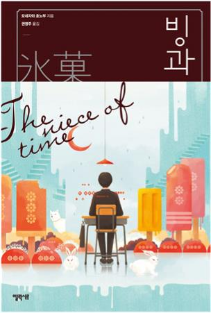
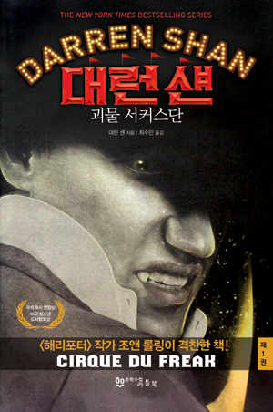
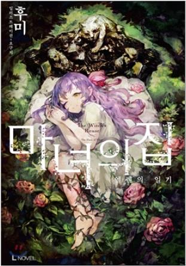
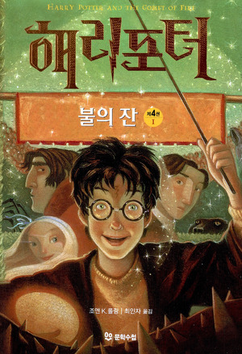

-

제목: 빙과
저자: 요네자와 호노부
가격: 10800원(10% 1200원 할인)
............
대학 노트 정도 되는 크기에 두께는 얇다고 할 수 있을 것 같다.
제본은 물론 중철이지만, 인쇄소에서 제작한 듯 만듦새는 그럴싸했다.
가죽 장정 같은 느낌을 낸 갈색 표지에는 수묵화풍으로 데포르메한 개와 토끼를 그렸다.
많은 토끼들이 원을 그리며 에워싼 가운데 개 한 마리와 토끼 한 마리가 서로를 물고 있었다.
개의 엄니는 토끼의 몸통을 물어뜯을 듯하고, 토끼의 날카로운 앞니는 개의 목덜미에 깊숙이 박혀 있다.
데포르메로 표현된 덕분에 처참함이 없는 것이, 우스꽝스럽기도 하고 또 섬뜩하기도 했다.
토사구팽이라는 명언이 있는데, 여기서는 토끼와 사냥개가 서로 치고받고 있다.
두 마리를 둘러싼 토끼들이 그 광경을 묘하게 귀여운 몸짓으로 바라보고 있다.
그림 위에 글자가 있다. 아무 장식이 없는 무덤덤한 명조체로 ‘빙과 제2호’라고 씌어 있었다.
발행은 1968년. 오래전이다. 그리고 이 제목.
“빙과?”
-

제목: 대런 섄
저자: 대런 섄
가격: 6300원(10% 700원 할인)
............
대런 섄은 학교 가는 게 즐겁고 친구도 퍽 많은 평범한 소년이다. 괴물 서커스단에 초대받기 전까지는…….
우연히 괴물 서커스 티켓을 손에 넣은 대런과 그의 친구 스티브, 그것이 모든 것의 시작이었다.
스티브와 함께 괴물 서커스를 보러 간 대런은, 뱀파이어 크렙슬리 소유의 거대한 독거미 마담 옥타에 매료되고 만다.
기어코 독거미를 훔쳐 온 대런은 집에서 몰래 키우며 놀라운 묘기를 부리게끔 훈련시킨다.
그러던 어느 날 집으로 놀러 온 스티브에게 마담 옥타를 득의양양하게 보여주는데,
스티브가 그만 거미에게 물려 혼수상태에 빠져버린다. 생각 끝에 대런은 크렙슬리를 차자가 스티브를 살려줄 것을 부탁한다.
그러나 크렙슬리는 해독제를 주는 대신, 대런에게 뱀파이어의 조수가 되어 함께 다녀야 한다는 조건을 붙인다.
마침내 대런은 친구를 살리기 위해 뱀파이어에게 자신의 영혼을 판다.
-

제목: 마녀의 집
저자: 후미
가격: 7200원(10% 800원 할인)
............
휘, 휘 하는 소리가 들린다. 너무나 가까운 곳에서 들리는데다가,
가슴이 오르락내리락할 때마다 들리기에 그것이 바람 소리가 아니라 자신의 입에서 내뱉어지는 소리라는 것을 깨닫는다.
이 방은 너무나도 춥고 어둡다. 아아, 나는, 전에도, 이런 식으로 차가운 바닥에 쓰러진 적이 있었던가.
그런 생각을 하면서 눈을 감았다. 눈물인지 피인지 알 수 없는 액체가 볼을 따라 흘러내린다.
창문에서 강한 바람이 불어 들어온다.
책상 위에 펼쳐져 있는 일기를 팔락팔락 넘기는 소리가 난다.
그것은 나의 일기.
내 모든 것이 기록되어 있는 북은 표지의 책. 나는 마치 어제 일어났던 일처럼 모든 것을 떠올릴 수 있다.
나는 쓴 적도 없는 그 일기의 첫머리를 알고 있다.
-

제목: 해리포터와 불의 잔
저자: J.K 롤링
가격: 31500원(10% 3500원 할인)
............
해리 포터를 박진감넘치는 모험으로 끌고 들어가는 것은 '불의 잔'.
불의 잔은 호그와트 마법사 학교의 대표로 해리를 선택한다.
처음으로 등장하는 다른 마법사 명문학교 보바통, 덤스트랭의 대표들과 해리는 최고의 마법사를 가리는 시합에 돌입한다.
인어들에게 사로잡힌 인질을 구출하고 스핑크스와 지혜의 대결을 벌이면서 시합을 성공적으로 해낸 해리는
마침내 우승컵을 거머쥐게 되는데...
우승컵에 손을 대는 순간 해리는 갑자기 이상한 곳으로 빨려 들어간다!
우승컵에 마법을 걸어둔 사람은 누굴까?
그건 다름아닌 볼드모트.
이제 새로 육신을 얻어 재생하고자 하는 볼드모트와 그에 맞서 싸우려 하는 해리의 대결이 펼쳐진다
.
볼드모트의 과거도 처음으로 밝혀진다.